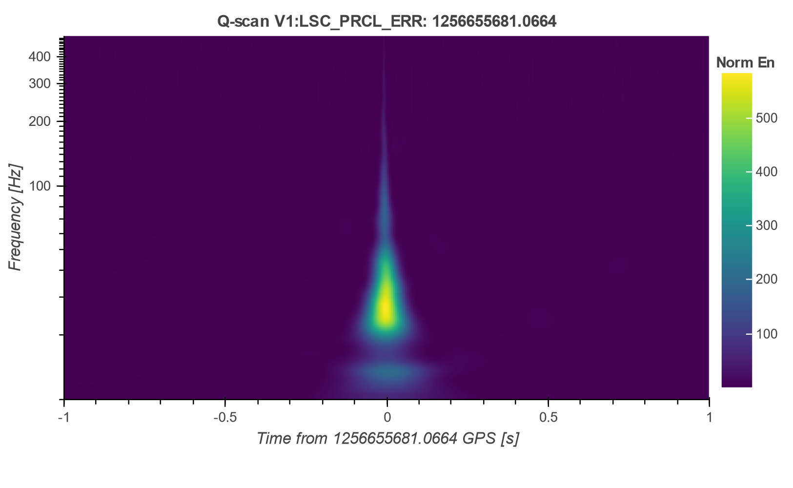
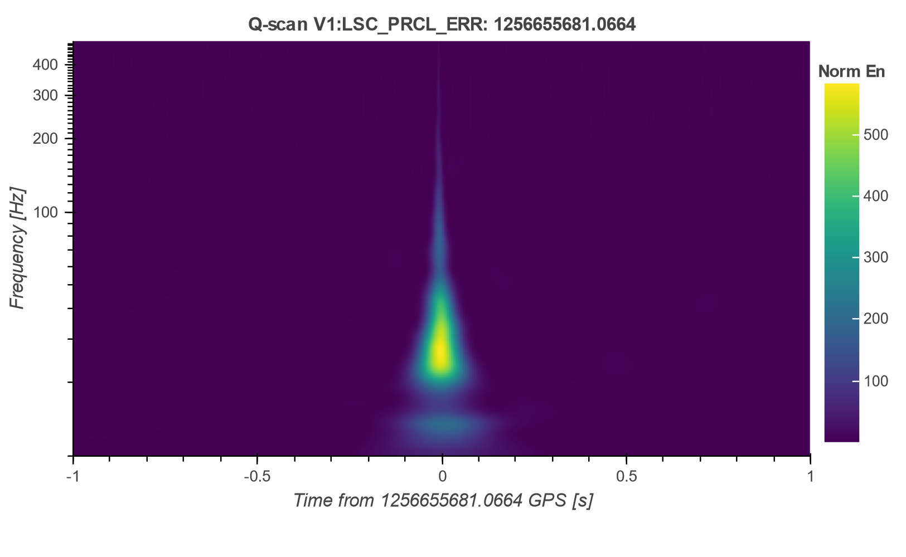

NICE in Virgo¶
The NICE interface is installed on a virtual machine located in the Virgo farm at Cascina. The database is configured as multiple datasases system. The first 3 database are used as archive of the Omicron triggers (link) present in O2, O3a and O3b runs. The last one is created for the online analysis of the O4 data, with the purpose of updating the it periodically with low latency.
The databases are located in cmplwebtest machine. The will we transfered in a definitive location for the project final release.
Virgo useres can use NICE behind firewall VPN client and it is provided through Apache HTTP Server.
The instructions for a prodictive glitch investigation are explained in the investigation flow page. Additional tools are available in the SGAW and are shown below.
Can I download strain timeseries around a glitch?¶
Yes, there is a dedicated tool in SGAW page with which you can download 2 seconds of h(t) data around the selected glitch (click Download Time Series). It returns a hdf file, which you can save locally and make your own indipendent analysis.
How many auxiliary channels are available?¶
The auxiliary channels available in NICE database are the DetChar Standard Channels (link). In SGAW page there is a link to the list of channels coincident triggers at the glitch peak time. Here a Show Glitches tool is provided, which plot as Q-scan plot as the channels with the glitch. Below there is an example of an Omicron glitch present in O3b run, with a coincidence in the power recycling cavity channel:
 

Different kinds of coincident channels could suggest the origin of such a noise. You can download the data around the peak time, as explained above, and assess that with a deeper analysis.
Warning
The auxiliary channels data are available as long as they remain on the farm machines. This means that old runs, like O2 and O3a, contain only the h(t) time-series.
Are there classified glitches?¶
To date, in Virgo NICE databases there are no classified glitches. Since it contains glitches from O2 run, it will be filled with the classification results of REINFORCE citizen science activities. This is a project that aims to classify glitches from Virgo past runs, in order to get the training dataset used in deep learning automatic classification pipelines. These results are compatible with NICE application, which will provide that in its glitches lists, IPW and SGAW pages.